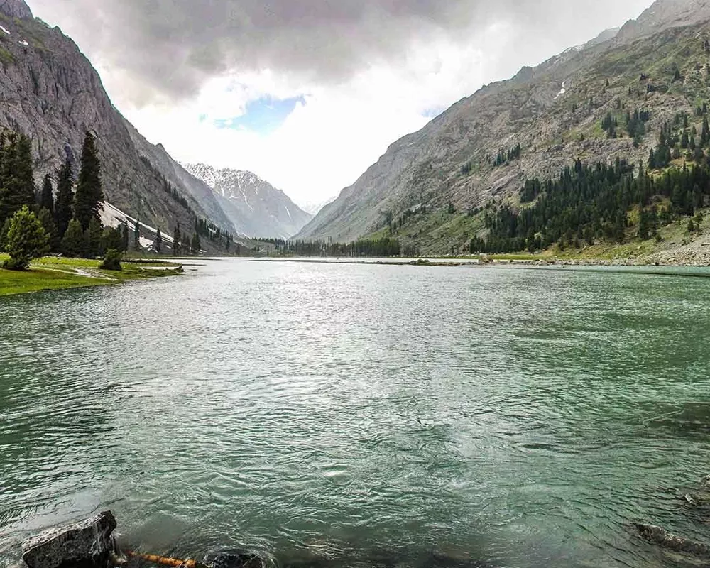

Visiting Swat Valley of Different Places
July 13, 2024
Kalam Valley
Kalam (Kalami, Pashto, & Urdu: کالام) is a valley located 99 kilometres (62 mi) from Mingora in the northern upper section of Swat Valley along the banks of the Swat River in the Khyber Pakhtunkhwa province of Pakistan.The Swat River was formed as a result of the confluence of two major tributaries, the Gabral and Ushu river.
At an elevation of about 2,000 m (6,600 ft) above sea level, the valley itself provides a plateau that is located above the river and is used for farming.[6] There are a number of visible mountains, also visible from Matiltan, a valley close to Kalam Valley, including Mount Falak Sar at 5,918 meters (19,416 feet), and another unnamed peak at 6,096 meters (20,000 feet) high.
Read more about Kalam Valley
Kumrat Valley
Kumrat (Urdu: کُمراٹ) is a valley in the Upper Dir District of the Khyber Pakhtunkhwa province of Pakistan.There is around 45 minutes drive to Kumrat Valley from the town of Thal on the banks of the Panjkora River. It is among the most popular tourist spots in Khyber Pakhtunkhwa.
Every summer season, thousands of tourists from different areas of the Pakistan and abroad visit Kumrat Valley for its greenery and cool weather. Around Eid al-Fitr holidays, around 2,000 vehicles enter the region on a daily basis.[4] It can only be accessed via four-wheel vehicles, as the road leading to it is unmetalled.
Read more about Kumrat Valley
Madyan
Madyan (Pashto and Urdu: مدین) is a popular hill station located in the Swat District of the Khyber Pakhtunkhwa province of Pakistan. It is situated at a distance of about 55 kilometres (34 mi) from Mingora. It is a tourist destination. Each year, thousands of tourists from all over Pakistan visit it, especially in summer[citation needed] Madyan is also famous for its trout fish.[citation needed] Agriculture and tourism-related businesses like handicrafts outlets, restaurants and hotels are the main sources of income for the locals, although a small fraction of the population is also working abroad, particularly in the gulf countries. Madyan Valley is known all over the district because of its perfect weather condition.Tourists are attracted by the transparent and colorless water flowing in a stream that begins from Beshigram (بشیگرام) Valley and meets with the Swat River.
Read more about Madyan
Bahrain
Bahrain ( Arabic: البحرين, romanized: al-Baḥrayn, lit.'Two Seas', locally ) officially the Kingdom of Bahrain, is an island country in West Asia. It is situated on the Persian Gulf, and comprises a small archipelago made up of 50 natural islands and an additional 33 artificial islands, centered on Bahrain Island which makes up around 83 percent of the country's landmass. Bahrain is situated between Qatar and the northeastern coast of Saudi Arabia, to which it is connected by the King Fahd Causeway. The population of Bahrain is 1,501,635 as of May 14, 2023, based on elaborations of the United Nations data, of whom 712,362 are Bahraini nationals. Bahrain spans some 760 square kilometres (290 sq mi), and is the third-smallest nation in Asia after the Maldives and Singapore.[14] The capital and largest city is Manama.
Read more about Bahrain
Saidu Sharif
Saidū Sharīf (Pashto/Urdu: سيدو شريف) is the capital of the Swat district, Khyber Pakhtunkhwa, Pakistan. The city also serves as the capital of the Malakand Division. It was named after Saidu Baba, a prominent leader of the former state of Swat.
Saidu Sharif is the hub of several official buildings, and archeological sites such as the Swat Museum, the mausoleum of Saidu Baba, Royal residential palace of the former Wali-e-Swat, and the archaeological remains of the Butkara Buddhist Stupa.
Read more about Saidu Sharif
Mahudand Lake
Mahodand Lake (Urdu: مہوڈنڈ جھیل; Pashto: د ماهو ډنډ - "Lake of Fishes") is a lake located in the upper Usho Valley at a distance of about 35 kilometres (22 mi) from Kalam in Swat District of Khyber Pakhtunkhwa province of Pakistan.[1] The lake is accessible by a four-wheel drive vehicle, and is often utilized for fishing and boating.
The Mahodand Lake lies at the foothills of Hindu kush mountains at an elevation of 2,865 m (9,400 ft), surrounded by meadows, mountains and dense forests. Similarly, the banks of Mahodand Lake are covered by pines and pastures that serve as a camping site during the summer. The Mahodand Lake is fed by melting glaciers and springs of the Hindu Kush mountain and gives rise to Ushu Khwar, the major left tributary of the Swat River.
Read more about Mahudand Lake
Malam Jabba
Malam Jabba (also Maalam Jabba, Urdu: مالم جبہ) is a hill station and ski resort in the Hindu Kush mountain ranges. It is nearly 40 km far from Saidu Sharif in the Swat Valley of the Khyber Pakhtunkhwa province of Pakistan. It is 314 km far from Islamabad and 51 km from Saidu Sharif Airport.[1
Malam Jabba is home to one of the two ski resorts in Pakistan, the other being situated in Naltar, Gilgit Baltistan.[2][3] Along the main Madyan-Kalam road, a pivotal juncture emerges at Manglor town, approximately 12 km from Saidu Sharif. Here, the route takes a divergent path, veering towards the Malam-Jabba Dara. There are several settlements, such as Salanda, Jehanabad, Talegraam, Badar, Ser, Malam, Kishora, Spine Oba, culminating in Jabba.
Read more about Malam Jabba